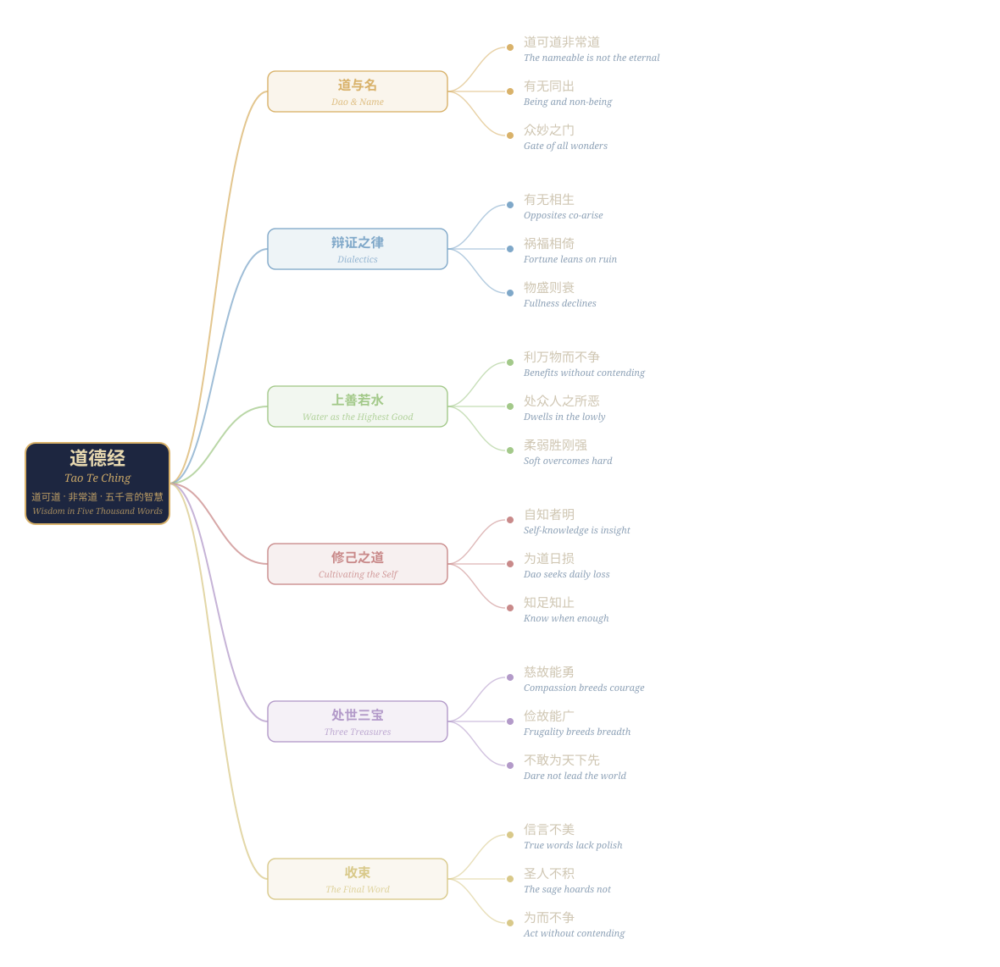

道德经
〇 · 书籍信息
基本信息
| 书名 | 《道德经》——本名《老子》，与《庄子》双峰并峙：五千余言，分《道经》《德经》两大部分，论述宇宙本体、万物之源与自然规律，融入治国、修身、砭时、养生、议兵六大方向 |
|---|---|
| 版本 | 马王堆帛书考古：1973 年长沙出土的《老子》帛书《德经》在前《道经》在后——这也许是古本的顺序；本书原文遵通行本，另附黄老学派集大成者河上公的注解 |
| 作者 | 老子其人（据《史记·老子韩非列传》）：楚苦县人，姓李名耳字聃，周守藏室之史——孔子问礼于老子，临别叹曰「吾今日见老子，其犹龙邪！」；见周之衰，至关，著书上下篇五千余言而去，莫知其所终 |
| 读法 | 前言定调：历代注解千家、「仁者见仁智者见智」——黄老派称「君人南面之术」，养生家称「安身立命」之说，兵家称「谈兵论战」之德，帝王视为「治国安邦」之策，近代学者定位为「论说哲理」的哲学著作——「以心为本」「知行合一」地读，使其中的真意为己所用 |
| 一句话 | 《道德经》是一部用「正言若反」写成的辩证之书：柔弱胜刚强、不争故莫能与之争、无为而无不为——它教人后退一步，却把天地看得更完整。 |
一 · 核心主题总览
这部五千言经典里的四组母题：① 道与无名
第一章立起全书的本体论：「道」无法用言语清晰地表达，能说出来的就不是「大道」；「无，名天地之始；有，名万物之母」——保持虚无以观其妙、保持实有以观其徼，「此两者，同出而异名，同谓之玄。玄之又玄，众妙之门」——「虚无」和「实有」不过是「道」的不同两面。
② 有无相生的辩证法
第二章给出全书的世界观：「有无相生，难易相成，长短相形，高下相倾，音声相和，前后相随，恒也」——对立面相互依存是永恒规律；圣人因此「处无为之事，行不言之教」「生而不有，为而不恃，功成而弗居。夫唯弗居，是以不去」——不居功，功才留得住。
③ 上善若水
第八章把「道」具象成一种品格：「上善若水。水善利万物而不争，处众人之所恶，故几于道」——水在天为雾露、在地为源泉，「能方能圆，曲直随形」，滋养万物却甘居众人厌恶的低处；「夫唯不争，故无尤」——不争，反而没有怨咎。
④ 知足知止与柔弱
后半部把辩证法用回人生：「知足不辱，知止不殆，可以长久」（四十四章）；「祸兮，福之所倚；福兮，祸之所伏」（五十八章）；「坚强者死之徒，柔弱者生之徒」（七十六章）；「天下柔弱莫过于水，而攻坚强者莫之能胜」（七十八章）——「正言若反」：听起来像反话的，才是正面的话。
二 · 第一段 道经开篇 —— 可说与不可说—— 常道 · 玄之又玄 ——
道可道，非常道
第一章被河上公分成两层：「道」这个字在书里有两种用法——经术政教之道 vs 自然生长之道；「常道当以无为养神，无事安民，含光藏晖，灭迹匿端，不可称道」——道无形，故不可名：「始者道本也，吐气布化，出于虚无，为天地本始也」。解析进一步指出结构：「常无」是为了观察事物玄妙的本质，「常有」是为了观察事物的表面现象——「有」和「无」就像支撑起「道」的「众妙之门」。
◆ 语言学习 · 概念 · 道与名
| 道（名词） | 宇宙本原——引申为万物的根本、真理、原理、规律 |
|---|---|
| 道（动词） | 说明、讲清楚——可道之道已非常道 |
| 徼（jiào） | 边界、分界线——事物的表象 |
| 众妙之门 | 玄之又玄的入口：有无同出而异名 |
句型 ｜ 「道可道，非常道；名可名，非常名。」——全书的总纲：语言是通道也是牢笼——凡是能被定义的都只是道的切片：承认不可说，才是说的开始。
功成而弗居
第二章从美学切进政治：「天下皆知美之为美，斯恶已；皆知善之为善，斯不善已」——当所有人都知道什么是美，丑的观念也同时出现：价值判断从来成对出生。圣人因此选择另一条路：「处无为之事，行不言之教。万物作焉而不辞，生而不有，为而不恃，功成而弗居。夫唯弗居，是以不去」——生养万物却不占有，成就一切却不自恃：正因为不居功，功绩才不会失去。
◆ 语言学习 · 概念 · 无为
| 无为 | 不妄为、不强为——顺道而行而非躺平 |
|---|---|
| 不言之教 | 身教重于政令：万物作焉而不辞 |
| 相生相成 | 有无难易长短高下：对立面互为存在条件 |
| 弗居 | 不占据、不自恃——「是以不去」的前提 |
习语 ｜ 「夫唯弗居，是以不去。」——第二章的收口定理：占有会流失，不占才长存——功劳写在别人嘴里比写在自己账上更牢。
三 · 第二段 上善若水 —— 不争的兵法—— 水善利万物 · 正言若反 ——
水善利万物而不争
第八章是全书最著名的一章：「上善若水。水善利万物而不争，处众人之所恶，故几于道。居善地，心善渊，与善仁，言善信，政善治，事善能，动善时。夫唯不争，故无尤」——七善排开：居处、心境、交往、言语、为政、处事、行动，全部以水的姿态为范本。河上公补足物理细节：「水在天为雾露，在地为源泉……能方能圆，曲直随形。夏散冬凝，应期而动，不失天时。壅之则止，决之则流，听从人也。水性如是，故天下无有怨尤水者也」。
◆ 语言学习 · 概念 · 七善
| 几于道 | 接近于道——水是道在世间的最近似物 |
|---|---|
| 处众人之所恶 | 甘居低处、脏处、人不愿去处——谦下的具象 |
| 动善时 | 行动善于把握时机：夏散冬凝，应期而动 |
| 无尤 | 没有怨咎——不争的反向收益 |
句型 ｜ 「夫唯不争，故无尤。」——不争的第一条理由：争是抱怨的磁铁——你不争夺位置，位置上的人就没有理由恨你：谦下不是软弱，是低摩擦的生存策略。
柔弱胜刚强
七十八章把水的哲学推到极致：「天下柔弱莫过于水，而攻坚强者莫之能胜」——水能怀山襄陵、磨铁消铜；「弱之胜强，柔之胜刚，天下莫不知，莫能行」——道理人人都懂，做到的没有一人。七十六章给出原理：「人之生也柔弱，其死也坚强；草木之生也柔脆，其死也枯槁。故坚强者死之徒，柔弱者生之徒」——柔弱是生命的姿态，僵硬是死亡的姿态。七十八章的结论石破天惊：「受国之垢，是谓社稷主；受国之不祥，是谓天下王。正言若反」——能承受全国耻辱的才配做君主：听起来像反话的，才是正面的话。
◆ 语言学习 · 概念 · 正言若反
| 攻坚强莫之能胜 | 水滴石穿：至柔克制至刚的物理学 |
|---|---|
| 坚强者死之徒 | 僵硬通向死亡：生命在于柔韧 |
| 受国之垢 | 承受国家耻辱——社稷主的资格线 |
| 正言若反 | 全书修辞的总纲：真理常以悖论的面目出现 |
习语 ｜ 「正言若反。」——五千言的自白书：「不争是为了莫能与之争」「后退是为了看得更全」——读老子要反过来读：所有退让的句子，都藏着进取的算式。
四 · 第三段 修己之道 —— 自知与日损—— 抱一 · 知足 · 为道日损 ——
自知者明
三十三章是修己的第一课：「知人者智，自知者明。胜人者有力，自胜者强。知足者富。强行者有志。不失其所者久。死而不亡者寿」——六组对偶层层递进：了解别人是智，了解自己才是明；战胜别人是有力，战胜自己才是强。河上公解「强行」为「持之以恒，坚持不懈」——「强行者有志」不是硬来，是每天向着目标再走一步的耐力。
◆ 语言学习 · 概念 · 明与强
| 知人者智 | 了解他人是聪明——向外用力的上限 |
|---|---|
| 自知者明 | 了解自己是通达——向内用力的开始 |
| 自胜者强 | 战胜自己的欲望与惰性：真正的强 |
| 死而不亡者寿 | 身死而精神不灭——老子对寿命的重新定义 |
句型 ｜ 「知人者智，自知者明。」——修己之路的第一道分岔：智与明是两种成就：识人的本事再多，不认识自己就仍是盲人骑瞎马——老子把向内看排在向外看之前。
为学日益，为道日损
四十八章区分两种学习：「为学日益，为道日损。损之又损，以至于无为，无为而无不为」——求学问要每天增加，求道要每天减少：减去成见、欲望与妄为，减到无可再减，反而没有什么做不成。四十四章给出配套的安全边界：「知足不辱，知止不殆，可以长久」——知道满足就不会受辱，知道适可而止就不会遇到危险。而九章早已把过度充盈的结局写明：「持而盈之，不如其已；揣而锐之，不可长保。金玉满堂，莫之能守；富贵而骄，自遗其咎。功遂身退，天之道也」——「日中则移，月满则亏，物盛则衰，乐极则哀」。
◆ 语言学习 · 概念 · 日损
| 为学日益 | 知识做加法：博学是积累的功夫 |
|---|---|
| 为道日损 | 智慧做减法：减成见、减欲望、减妄为 |
| 无为而无不为 | 减到极致的自由：不妄为反而无所不能为 |
| 功遂身退 | 急流勇退——「天之道也」的人生纪律 |
习语 ｜ 「功遂身退，天之道也。」——九章的总判决：功成名就时收手，不是消极，是顺应「日中则移、月满则亏」的天道——人生的高手都懂得在满杯前留一线。
五 · 第四段 处世之道 —— 三宝与收束—— 慈 · 俭 · 不为天下先 ——
我有三宝
六十七章给出老子的随身三件宝：「我有三宝，持而保之：一曰慈，二曰俭，三曰不敢为天下先。慈，故能勇；俭，故能广；不敢为天下先，故能成器长」——三件宝各自自带反直觉的杠杆：慈爱生出真正的勇气，节俭生出宽广的余地，不抢先反而能成为万物的统领。警告紧随其后：「今舍慈且勇，舍俭且广，舍后且先，死矣」——丢掉慈爱的勇气是匹夫之勇，丢掉节俭的扩张是裸奔，处处抢先则是死路一条。
◆ 语言学习 · 概念 · 三宝
| 慈 | 慈爱——故能勇：真正的勇气以爱为燃料 |
|---|---|
| 俭 | 节俭——故能广：留有余地方能长久 |
| 不敢为天下先 | 不抢先——故能成器长：后发者得全局 |
| 死矣 | 三宝皆舍的下场判词——全书最重的警示 |
句型 ｜ 「慈，故能勇；俭，故能广；不敢为天下先，故能成器长。」——六十七章的反直觉三连：每件宝都是「以退为进」的杠杆——勇、广、长不是追求来的，是慈、俭、后长出来的副产品。
信言不美，为而不争
终章八十一章给全书收口：「信言不美，美言不信。善者不辩，辩者不善。知者不博，博者不知」——三组对偶戳破包装：真实的话不动听，动听的话不真实。最后落到全书的终点：「圣人不积，既以为人，己愈有；既以与人，己愈多。天之道，利而不害；圣人之道，为而不争」——给别人的越多，自己拥有的越多：占有的悖论在给予中解开。八十章的「小国寡民」则是这一理想的土壤：「甘其食，美其服，安其居，乐其俗」——知足的社会图景。
◆ 语言学习 · 概念 · 为而不争
| 信言不美 | 真实不修饰——对美言的全书性警惕 |
|---|---|
| 圣人不积 | 不囤积：既以为人己愈有，既以与人己愈多 |
| 利而不害 | 天道的品格——滋养而不伤害 |
| 为而不争 | 五千言最后四个字：作为而不争夺 |
习语 ｜ 「天之道，利而不害；圣人之道，为而不争。」——全书最后一行：为，是积极做事；不争，是不抢功名——做与不争并不矛盾：老子从来不是叫人躺平，是叫人把力气用在对的地方。
六 · 人物图鉴与成长弧线—— 主角配角 · 一张表看穿 ——
主要人物
老子——全书主角——周守藏室之史、孔子的老师（孔子叹其犹龙）：见周之衰西出函谷，五千余言留下后「莫知其所终」——一位把智慧写在出关路上的人
河上公——黄老学派的集大成注家——每章的「名家注解」板块：把玄理落到养生、治国、处事的具体操作——「常名当如婴儿之未言，鸡子之未分，明珠在蚌中，美玉处石间」
水——道的世间化身——上善若水：利万物而不争、处众人之所恶、能方能圆曲直随形——五千言里出场最多的意象
孔子——问礼而来的参照系——「鸟吾知其能飞，鱼吾知其能游，至于龙吾不能知——吾今日见老子，其犹龙邪！」：儒道相遇的第一次记录
次要人物（功能位）
| 王弼 / 高亨 / 陈鼓应 | 前言邀请的注家队列——从晋代到当代的解老谱系：博采众长而不迷信先贤 |
|---|---|
| 关令尹喜 | 五千言的催生者——「子将隐矣，强为我著书」——没有他，就没有这部书 |
| 婴儿 | 修养的隐喻——「专气致柔，能如婴儿乎」「常名当如婴儿之未言」：柔与纯的标准化石 |
| 马王堆帛书 | 版本的考古证人——1973 年出土《老子》帛书《德》前《道》后：提醒读者通行本的顺序未必是古本 |
七 · 主题与象征—— 每个道具都在说话 ——
| 水 ↔ 道 | 上善之喻——滋养、居下、不争、能方能圆：道的物理化身 |
|---|---|
| 婴儿 ↔ 常名 | 返璞之喻——未言的婴儿、未分的鸡子：未被概念切割的世界 |
| 弓 ↔ 天道 | 七十七章之喻——「天之道，损有余而补不足」：张弓抑高举下，天道自带再平衡 |
| 祸福 ↔ 倚伏 | 五十八章之喻——祸福相倚相伏，「孰知其极」：好坏不是终点是过程 |
| 小国 ↔ 寡民 | 八十章之喻——甘其食美其服安其居乐其俗：知足社会的最小单元 |
八 · 写作手法赏析—— 怎么写，就能怎么学 ——
① 三板块体例
原文 + 注释 + 解析 + 名家注解——每章四层结构：入门者可读译文，进阶者可对读河上公——经典被装成了可自查的工具箱
② 韵文式箴言
「多为韵文，论述精辟」——五千言以对偶与排比写就：知人者智自知者明、信言不美美言不信——顺口即能成诵
③ 正言若反的修辞
「不争故莫能与之争」「无为而无不为」——悖论式格言是全书的指纹：读者被强迫慢下来，绕过第一直觉
④ 六大方向的编织
论道、治国、修身、砭时、养生、议兵——同一道字反复显影于不同场景：哲学被写成多用途手册
⑤ 历史的厚度
从司马迁列传到马王堆帛书——前言把作者考证与版本学一并交代：读经典先读它的履历
九 · 名段欣赏—— 原文精读 · 逐段赏析 ——
十 · 金句摘录—— 14 条 · 中英对照 · 带出处 ——
"道可道，非常道；名可名，非常名。"—— 一章
"有无相生，难易相成，长短相形，高下相倾。"—— 二章
"生而不有，为而不恃，功成而弗居。夫唯弗居，是以不去。"—— 二章
"上善若水。水善利万物而不争，处众人之所恶，故几于道。"—— 八章
"持而盈之，不如其已；揣而锐之，不可长保。"—— 九章
"知人者智，自知者明。胜人者有力，自胜者强。"—— 三十三章
"知足不辱，知止不殆，可以长久。"—— 四十四章
"为学日益，为道日损。损之又损，以至于无为，无为而无不为。"—— 四十八章
"祸兮，福之所倚；福兮，祸之所伏。"—— 五十八章
"我有三宝，持而保之：一曰慈，二曰俭，三曰不敢为天下先。"—— 六十七章
"合抱之木，生于毫末；九层之台，起于累土；千里之行，始于足下。"—— 六十四章
"坚强者死之徒，柔弱者生之徒。"—— 七十六章
"信言不美，美言不信。善者不辩，辩者不善。"—— 八十一章
"天之道，利而不害；圣人之道，为而不争。"—— 八十一章
十一 · 拓展阅读—— 原文 · 词条 · 译文 ——
十二 · 个人感悟与心得—— 三点心得 ——
三点感悟
① 给追求装上「知止」的刹车
知足不辱、功遂身退：目标要有终点线——业绩、仓位、名誉都一样：满杯前留一线，月满则亏的规律对谁都一视同仁。
② 把水做成处世模板
上善若水的七善：利他、居下、守信、抓时机——不争不是退出竞争，是把摩擦降到最低：省下的力气都用在把事做成上。
③ 学会做减法
为道日损：信息过载的时代，加法人人会做——真正的功夫是每天减一点成见、减一点欲望：减到清单只剩要紧的三件事，无为而无不为。
读完这五千言，最难忘的是它的最后一行：「天之道，利而不害；圣人之道，为而不争」——老子的哲学从来不是退场，是把力气从争夺的位置挪到做事的位置：为人愈多，己愈有；与人愈多，己愈多——这就是五千言留给世界最深的算式。
十三 · 一页速查（复习用）
| 道与名 | 可道的非常道：语言是通道也是牢笼 |
|---|---|
| 有无相生 | 对立面互为存在条件：判断要成对地做 |
| 上善若水 | 利万物不争、处众人之所恶：几于道 |
| 知足知止 | 不辱不殆可长久：功遂身退天之道 |
| 为而不争 | 利而不害收全书：为人愈多己愈有 |
十四 · 全书思维导图—— 一图纵览 ——

一图纵览全书骨架 · 中英双语对照 · 手机端可左右滑动查看全图